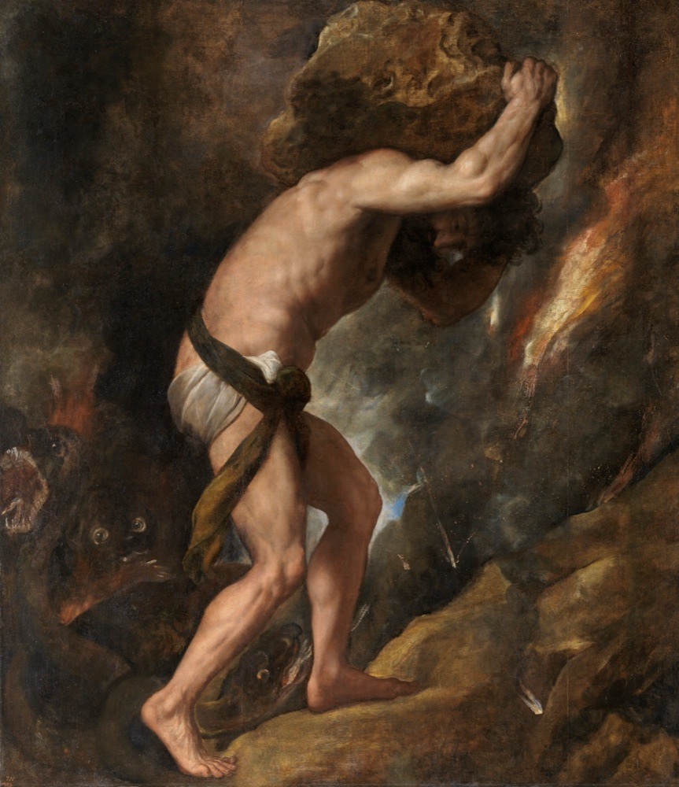

Camus begins with suicide and ends with happiness. Between them, he asks how to live when our need for a final explanation meets a world that gives none.
Reading notes /Albert Camus, 1942/8 source notes/ 8 min read
There is but one truly serious philosophical problem, and that is suicide.Justin O'Brien translation, “Absurdity and Suicide,” opening
The argument concerns what follows from a belief: if we cannot find an ultimate reason for our existence, must we conclude that living is no longer worthwhile? Camus answers no. He wants to keep living without claiming to have resolved the difficulty. His discussion is a philosophical inquiry, rather than an explanation of why people die by suicide.
The essay was completed in February 1941 and published by Gallimard in October 1942, during the occupation of Paris. Camus's 1955 preface places its writing amid the French and European disaster of 1940. Those dates matter when comparing it with Frankl's later camp memoir: this essay was not written with the knowledge available after the war.

Titian, Sisyphus, 1548 to 1549. Museo del Prado. Public domain painting.
The starting point
The absurd is a relation
We want the world to be intelligible and our lives to belong to some coherent whole. For Camus, the absurd arises when that demand meets the limits of what the world lets us understand. It requires both the demand and the failure to satisfy it.
The absurd is born of this confrontation between the human need and the unreasonable silence of the world.O'Brien translation, “Absurd Walls,” final paragraph
Camus begins with weariness, a familiar landscape suddenly seeming foreign, and the recognition of approaching death. These experiences make ordinary explanations seem insufficient. Reflection turns the feeling into a question about our whole condition.
He sometimes writes as if the world has no meaning. In “Absurd Freedom,” he states a narrower limit: he does not know whether the world has a meaning beyond it, and cannot know that meaning from his present position. He refuses to rely on an answer he cannot establish; he has not disproved its existence.
Affection and creative work still appear as things a person can live for. The unresolved question concerns an explanation of existence as a whole. Its absence does not establish that nothing can matter.
The argument
Suicide, the leap, and revolt
Each response treats the relation differently. The explanations below are mine; the extracts are Camus's wording in Justin O'Brien's translation.
choose a response, or use the arrow keys
The first question
Does the absurd require suicide?
Camus rejects the inference from an unexplained life to a life that must end. Death removes the conscious person whose demand made the absurd possible. It ends the confrontation instead of sustaining it. On the terms of his inquiry, suicide cannot be a way of living consistently with the absurd.
Camus criticizes thinkers who begin with the limits of reason and end by affirming a reality beyond those limits. In his account of Kierkegaard, the contradiction that reason cannot resolve becomes a reason for faith. Camus calls this “philosophical suicide”: thought abandons the demand for clarity that first brought it to the absurd.
The failure to establish an answer does not itself establish a divine answer. A believer can dispute Camus's standard of evidence. His criticism assesses whether faith follows from the absurd; it does not supply a full account of Kierkegaard's work.
He makes of the absurd the criterion of the other world, whereas it is simply a residue of the experience of this world.
Revolt means continuing to live while keeping both facts in view: the desire for an answer and the inability to obtain one. It refuses resignation, even though it expects no final resolution. Camus calls the effort to remain aware of that condition a source of value in its own right.
He draws two further consequences, freedom and passion. The freedom is practical: less dependence on a promised future that would finally justify life. He does not claim to have proved free will. Passion means living consciously through the experiences available in a finite life. Together these explain what he means by living “without appeal.”
Don Juan loves repeatedly without seeking one eternal love. An actor lives through roles whose performances disappear. A creator works without expecting the work to explain the world or last forever. Camus calls these illustrations, rather than models everyone should follow. They show conscious involvement in an experience that will end.
In “Absurd Freedom,” he favors the quantity of conscious experience over a hierarchy of better and worse lives. His account attends to Don Juan's experience more than to that of his lovers. Awareness of mortality does not settle his obligations to them.
In the final chapter, Sisyphus has defied the gods and resisted death. His punishment is to push a stone uphill, watch it fall, and begin again. The task cannot be completed. Camus concentrates on the descent, when Sisyphus has a pause in which to recognize his fate.
That awareness makes the punishment tragic: he knows it will not end. Camus then imagines the same awareness allowing Sisyphus to claim his experience as his own. The labor remains imposed and fruitless. What changes is his relation to it, including his refusal to let the gods determine the whole meaning of his days.
The struggle itself toward the heights is enough to fill a man's heart. One must imagine Sisyphus happy.O'Brien translation, “The Myth of Sisyphus,” closing lines
Camus allows sorrow as well as joy during the descent, and explicitly denies that discovering the absurd necessarily produces happiness.
A comparison
Camus beside Frankl
Viktor Frankl's Man's Search for Meaning offers a useful comparison. Frankl locates meaning in particular responsibilities: work to complete, a person to love, a response to unavoidable suffering. His logotherapy treats those meanings as things to discover, rather than stories freely invented for comfort.
Camus can value affection and creation without treating them as an explanation of existence. Frankl goes further. In “The Super-Meaning,” he affirms an ultimate meaningfulness that exceeds our rational grasp. That confidence crosses the limit Camus sets for his own inquiry. Their difference concerns what we may affirm beyond what we can understand; neither book is accurately reduced to a contest between having a reason to live and having none.
Frankl's testimony also cannot settle their disagreement through survival. The camps subjected people to murder, forced labor, starvation, and disease. Having a purpose was no guarantee against selection for killing. Frankl himself credits lucky chances and says “the best of us did not return.” His recollections can show what sustained him and some other prisoners. They cannot show that those who died lacked meaning or the right attitude.
The objections
Why must the response be revolt?
Camus's harder problem is whether his starting point requires the values he chooses. Why must clarity be preserved? Why should more conscious experience be preferable? The Stanford Encyclopedia of Philosophy identifies the shift from skeptical argument to the affirmation of Sisyphus's life. The image cannot make the preference logically compulsory.
Thomas Nagel's “The Absurd” (1971) disputes the diagnosis as well. He locates the conflict within us: we take our activities seriously, yet can step back and question the whole basis of that seriousness. A different world would not remove the difficulty. Even participation in an eternal divine purpose would leave us able to ask why that purpose matters.
For Nagel, ordinary reasons still operate when ultimate justification runs out. We continue to care about people and pursue tasks while recognizing that we cannot vindicate the entire framework from outside it. His proposed irony acknowledges both standpoints. It does not require indifference to suffering or abandoning commitments. He asks why absurdity should itself demand an agonized or heroic response.
Camus could answer that revolt names an effort to live with awareness, which Nagel also describes. Nagel objects to treating that awareness as a reason for defiance.
There is a further limit: remaining aware of the absurd supplies little guidance for conflicts between people. Camus denies that it licenses every action, but this essay gives us no developed account of obligation to others. His later The Rebel takes up murder and solidarity. Its answers should not be read backward into a book whose immediate question was whether to go on living.
Reading and verification
Sources and the limits of this reading
Explanations are paraphrase and interpretation; extracts use Justin O'Brien's 1955 translation. The linked transcription has scanning errors and different pagination from printed editions. I checked the central distinctions against the French text. This reading is confined to the early essay.
Eight source notes and what they support
Albert Camus, The Myth of Sisyphus and Other Essays. Trans. Justin O'Brien, Alfred A. Knopf, 1955. Searchable transcription. The sections linked above supply the quotations. “The Absurd Man” presents the illustrations; “Absurd Creation” develops the artist. The March 1955 preface distinguishes the essay from The Rebel.
Camus, Le Mythe de Sisyphe.French text, from an augmented edition. “Les murs absurdes” and “La liberté absurde” confirm the distinctions about the absurd and transcendent meaning. This later text includes the Kafka appendix.
Guy Basset, Société des Études camusiennes.Publication and composition: completed February 1941, published October 1942. The Kafka study entered the augmented edition in 1945.
Ronald Aronson, Stanford Encyclopedia of Philosophy.“Albert Camus,” sections 3.2 to 3.5 and 4.1. The limits of reason, the move to happiness, and the later development of solidarity. A scholarly interpretation.
Thomas Nagel, “The Absurd.”The Journal of Philosophy 68, no. 20 (1971), pp. 716 to 727. Article. Section II gives seriousness and doubt; section III challenges Camus's diagnosis; section V and the conclusion propose irony.
United States Holocaust Memorial Museum.“Auschwitz”, especially selection on arrival and conditions for forced laborers. Survival cannot be explained through the possession of purpose.
Museo Nacional del Prado.Sisyphus, Titian, 1548 to 1549. Painting used here via Wikimedia Commons; existing card and preview crops retained.